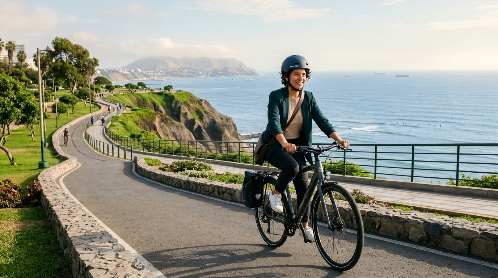

0 g CO₂ / kmBicicleta y E-Bike
El medio más eficiente para distancias de hasta 12 km en Lima. Esquiva atascos en las ciclovías de Arequipa, Salaverry y el Malecón sin gastar un sol en combustible ni estacionamiento.
⚡ 18-22 km/h punta
💰 S/. 0 combustible
❤️ +250 kcal/viaje
🌱 +10 pts/km